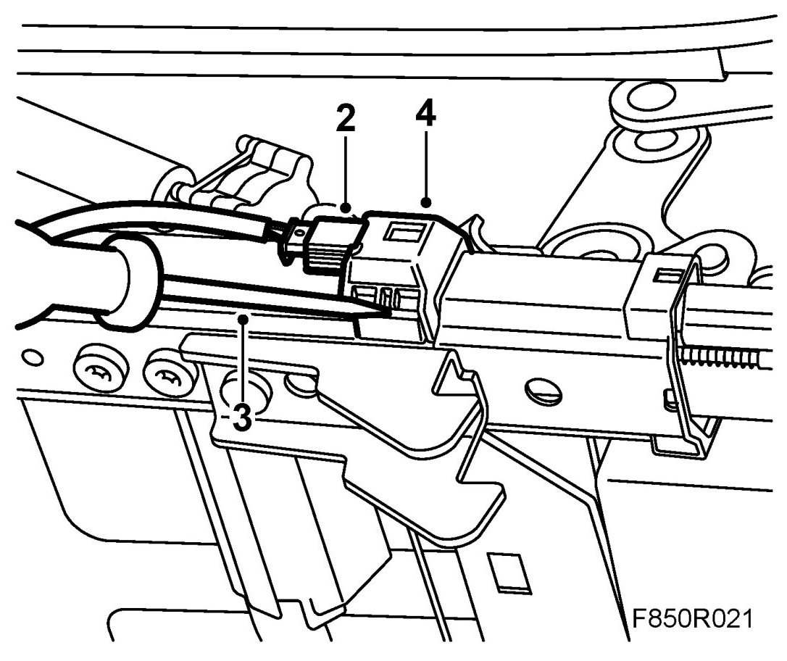
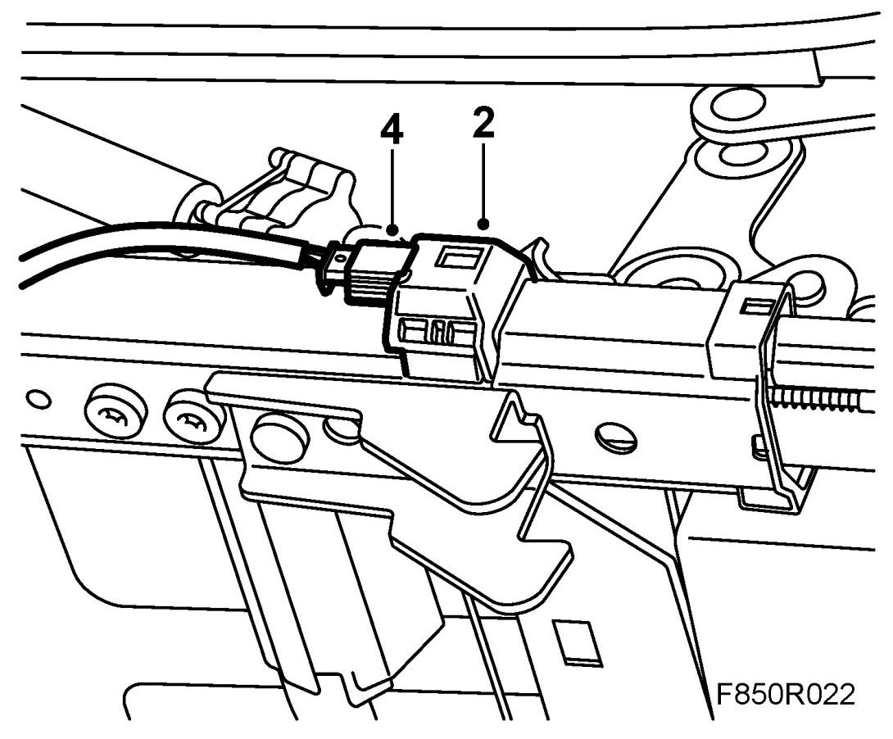

Seat Sensor/Switch: Service and Repair
Position Sensor, Seat (669D, 669P)
To remove
1. Remove the front seat.
2. Remove the seat position sensor's connector.

3. Open the seat position sensor's clips using a screwdriver.
4. Remove the seat position sensor's top section from the seat rail.
5. Carefully press together the seat position sensor mounting arms and pull out the seat position sensor.
6. Dismantle the clip from the seat rail.
To fit
1. Insert the seat position sensor's mounting arms in the seat rail.
2. Press in the seat position sensor on the top of the seat rail.

3. Press in the seat position sensor's clips.
4. Connect the seat position sensor connector.
5. Fit the front seat.